Woven Fabric Rolls
Bulk rolls in assorted shades and weaves.
CottonBlends
Tap any product tag to send an enquiry on WhatsApp with that product pre-selected.
Bulk rolls in assorted shades and weaves.

Hand-woven and embroidered detailing.
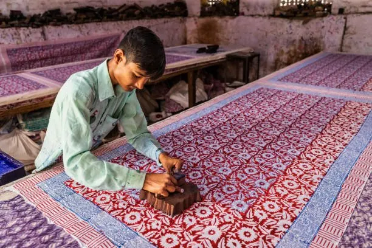
Traditional block-printed yardage.
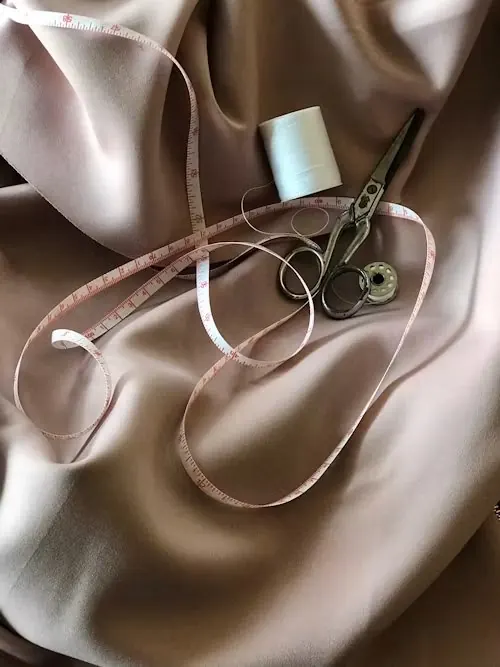
Smooth, fluid fabrics with a soft sheen.

Kurta, pants and dupatta sets for daily and festive wear.

White tunics with traditional red thread work.
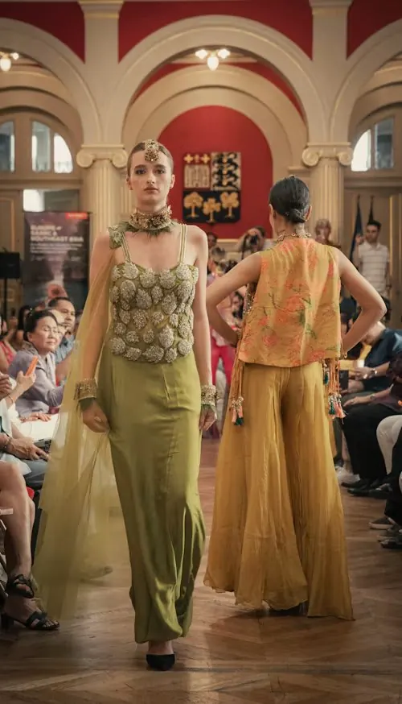
Contemporary silhouettes with Indian detailing.

Richly embroidered pieces for weddings and events.

Breathable shirts in solids and checks.
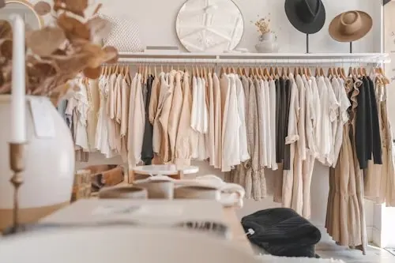
Neutral, relaxed pieces for everyday styling.
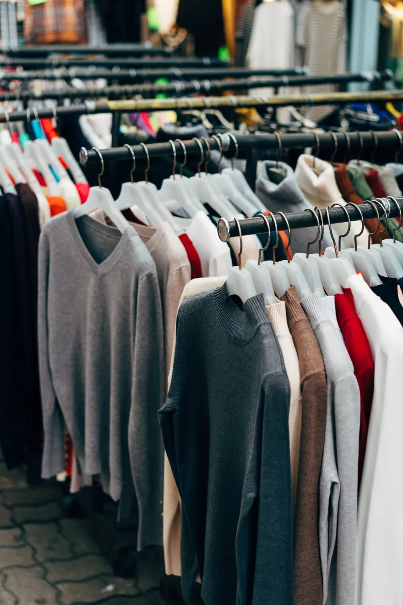
Sweaters and knit tops for cooler months.
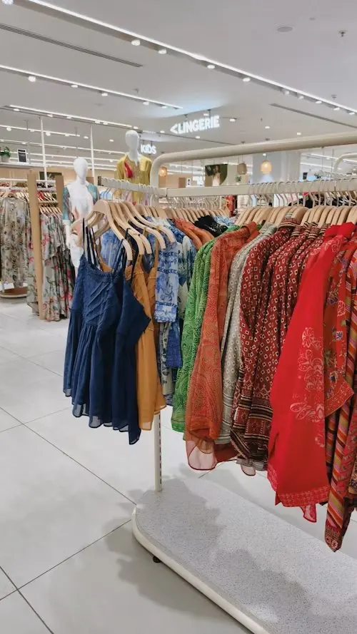
Printed and dyed tops ready for retail racks.
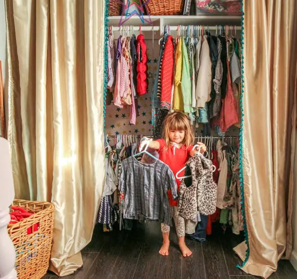
Soft, colourful and comfortable for little ones.
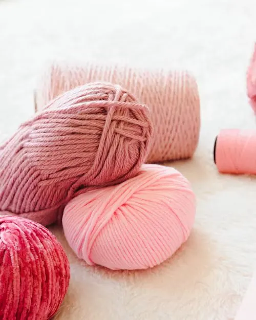
Soft balls and cones for knitting and crochet.
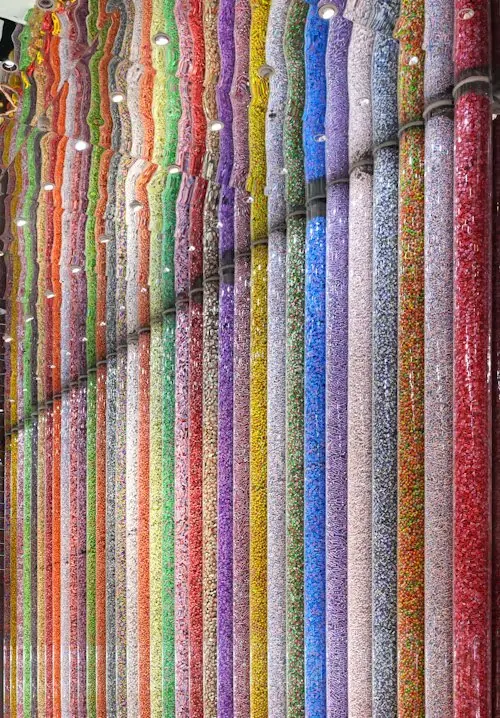
A wide shade range, colour-matched in our lab.
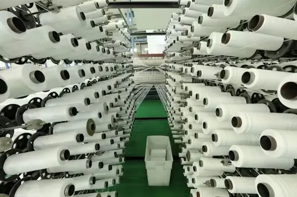
Industrial cones for weaving and knitting.
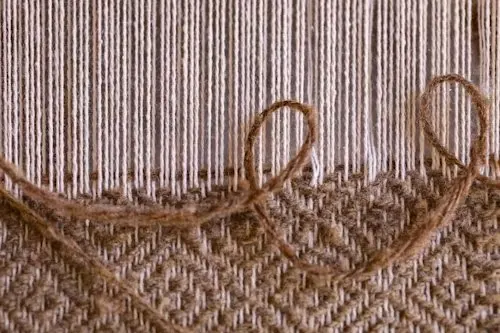
Jute and textured weaves for home and decor.
Don't see what you need?